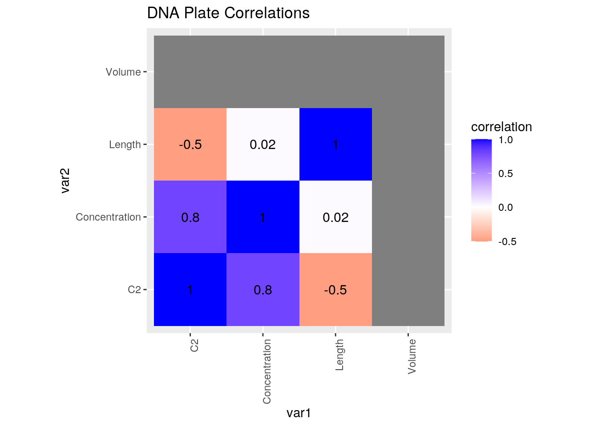
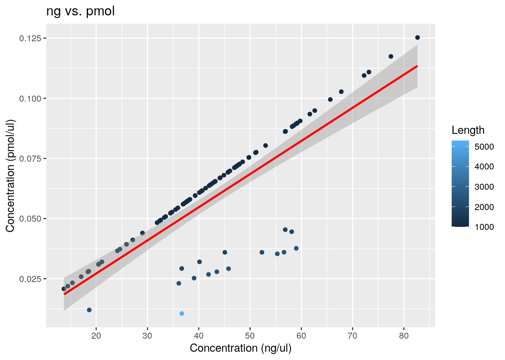
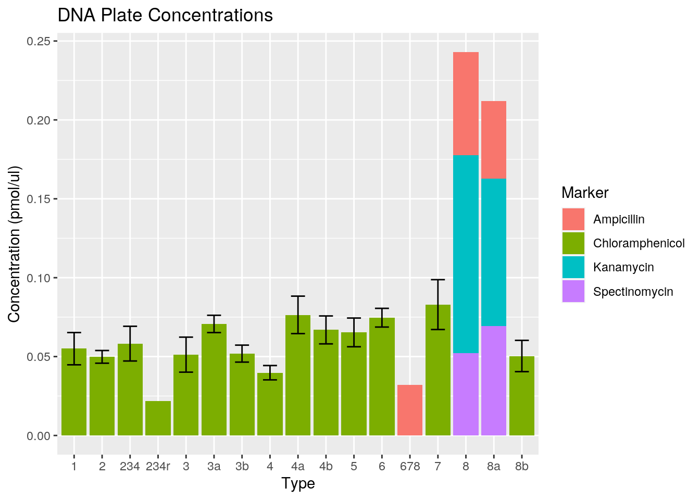
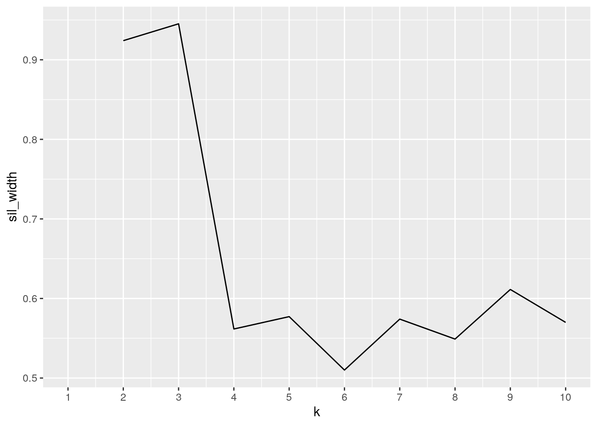
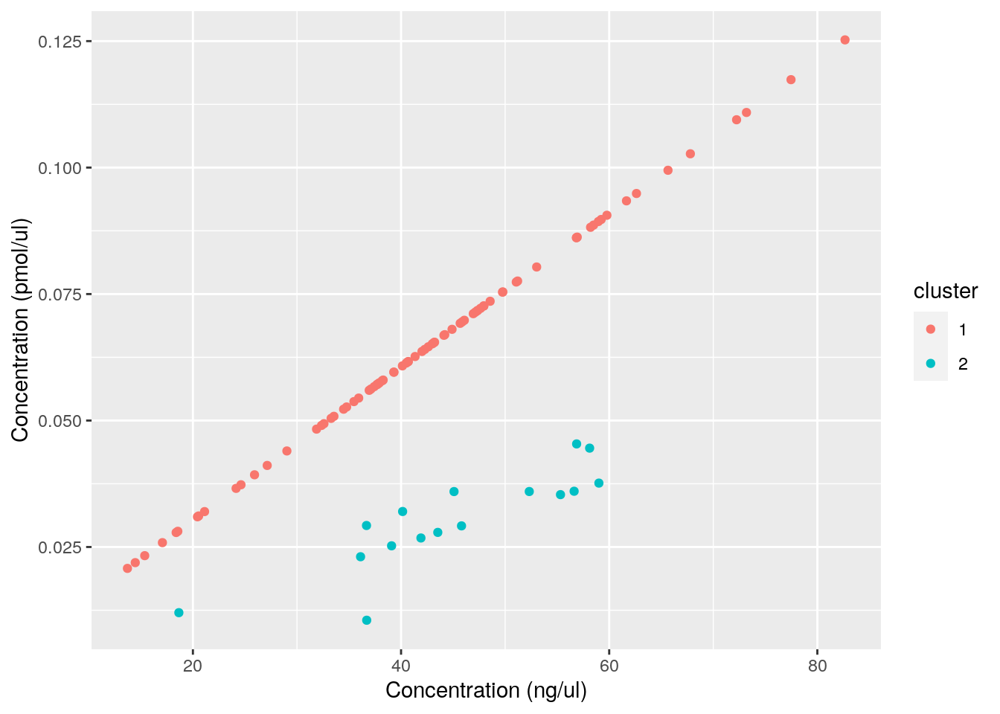

I gathered general data on Dueber’s 96-plasmid yeast toolkit (https://pubs.acs.org/doi/10.1021/sb500366v) as well as data relating to a specific prep of these 96 plasmids. The 96-plasmid yeast toolkit is a standardized set of DNA parts which enables the high-throughput, combinatorial assembly of yeast genes. This is interesting to me because I am currently working with this particular toolkit in lab.
The first dataset (info) contains the plasmid name, part type, part description, and E. coli antibiotic marker. This is provided by Dueber in his paper. The second dataset (ytk) contains the well number, plasmid name, concentration (ng), length (bp), and volume (ul) for one particular 96-well DNA plate. The data can be be combined because the variables each correlate to the plasmid name (YTK001-096), which is a common variable in the datasets. I expect there will be an association between the type of plasmid and the length. For instance, I think that coding sequences should have a greater average length than terminators.
library(tidyverse)
info <- read_csv("https://docs.google.com/spreadsheets/d/1dw3Dnj5X_U5DDC_ijWEhpWhSMaZY6eveDPK1ZwXBGOI/export?gid=0&format=csv")
ytk <- read_csv("https://docs.google.com/spreadsheets/d/1WnC1S73Q8W6LKGrxRLHrgmePQHFdqRPqFLSdb3E4Hao/export?gid=0&format=csv")The datasets were already tidy. When creating summary statistics, I used pivot_longer to combine “Concentration” and “C2” into a single column. I changed the names to “ng/ul” and “pmol/ul” and named this column “Unit”. Then, I put the values into a new column called “Concentration”. Also, I used pivot_wider to reshape a table from long to wide. Instead of the variables for antiobiotic marker reading vertical, they read horizontal when summarizing the number of plasmids of each marker.
There are 96 rows in each dataset corresponding to 96 unique plasmids (YTK001-096). I used full_join() because the datasets deal with the same 96 plasmids (common variable “Name”), and I wanted to retain all of the data. After the join, no observations were lost.
data <- full_join(info, ytk, by = "Name")Using mutate, I added a new variable “C2” which gives the DNA concentration in pmol/ul (the original units were ng/ul). Then, I created summary statistics for the “Length” variable, which gives the DNA length in bp. I grouped by “Type” and found that aside from the cassette plasmid, Type 3 plasmids (coding sequences) have the greatest mean length. In addition, I created summary statistics for the “Concentration” variable, which gives the concentration in ng/ul. I grouped by “Marker” and found that DNA samples with the kanamycin resistance marker have the greatest mean concentration. Finally, I created summary statistics for the “C2” variable, which gives the concentration in pmol/ul. This is different from ng/ul as it is dependent on the length of the plasmid. I grouped by “Type” and “Marker” and found that Type 2 plasmids with the chloramphenicol resistance marker have a mean concentration of 0.05 pmol/ul.
I also filtered for concentrations greater than 0.1 pmol/ul in order to identify DNA samples which meet this requirement. In addition, I found that the mean volume of Type 2 plasmids (promoter sequences) was 50 ul (all of them are 50 ul as this was the amount of water used to elute the DNA). Finally, I used pivot_longer to combine “Concentration” and “C2” into a single column, and pivot_widerto reshape a table from long to wide.
data <- data %>% mutate(C2 = Concentration * 10^-3/660 *
10^6 * 1/Length)
data %>% group_by(Type) %>% summarize(count = n(),
mean_length = mean(Length), sd_length = sd(Length),
max_length = max(Length), min_length = min(Length)) %>%
arrange(desc(mean_length))## # A tibble: 19 x 6
## Type count mean_length sd_length max_length min_length
## <chr> <int> <dbl> <dbl> <dbl> <dbl>
## 1 cassette 1 5283 NA 5283 5283
## 2 3 5 1827. 755. 2382 1000
## 3 4 6 1600. 465. 1900 1000
## 4 2 23 1450. 635. 2371 1000
## 5 1 7 1000 0 1000 1000
## 6 234 3 1000 0 1000 1000
## 7 234r 1 1000 NA 1000 1000
## 8 3a 7 1000 0 1000 1000
## 9 3b 3 1000 0 1000 1000
## 10 4a 4 1000 0 1000 1000
## 11 4b 6 1000 0 1000 1000
## 12 5 7 1000 0 1000 1000
## 13 6 7 1000 0 1000 1000
## 14 678 1 1000 NA 1000 1000
## 15 7 5 1000 0 1000 1000
## 16 8 3 1000 0 1000 1000
## 17 8a 3 1000 0 1000 1000
## 18 8b 3 1000 0 1000 1000
## 19 entry vector 1 1000 NA 1000 1000data %>% group_by(Marker) %>% summarize(count = n(),
mean_conc = mean(Concentration), sd_conc = sd(Concentration),
max_conc = max(Concentration), min_conc = min(Concentration))## # A tibble: 4 x 6
## Marker count mean_conc sd_conc max_conc min_conc
## <chr> <int> <dbl> <dbl> <dbl> <dbl>
## 1 Ampicillin 3 32.2 11.1 43.2 21.1
## 2 Chloramphenicol 88 42.9 13.7 77.5 13.7
## 3 Kanamycin 3 60.3 23.0 82.7 36.7
## 4 Spectinomycin 2 40.2 8.05 45.9 34.5data %>% group_by(Type, Marker) %>% summarize(count = n(),
mean_conc2 = mean(C2), sd_conc2 = sd(C2), max_conc2 = max(C2),
min_conc2 = min(C2))## # A tibble: 23 x 7
## # Groups: Type [19]
## Type Marker count mean_conc2 sd_conc2 max_conc2 min_conc2
## <chr> <chr> <int> <dbl> <dbl> <dbl> <dbl>
## 1 1 Chloramphenicol 7 0.0550 0.0270 0.103 0.0233
## 2 2 Chloramphenicol 23 0.0498 0.0193 0.0803 0.0120
## 3 234 Chloramphenicol 3 0.0582 0.0191 0.0774 0.0393
## 4 234r Chloramphenicol 1 0.0219 NA 0.0219 0.0219
## 5 3 Chloramphenicol 5 0.0512 0.0248 0.0882 0.0292
## 6 3a Chloramphenicol 7 0.0707 0.0145 0.0906 0.0537
## 7 3b Chloramphenicol 3 0.0519 0.00932 0.0575 0.0411
## 8 4 Chloramphenicol 6 0.0398 0.0111 0.0596 0.0293
## 9 4a Chloramphenicol 4 0.0764 0.0238 0.111 0.0573
## 10 4b Chloramphenicol 6 0.0669 0.0217 0.0893 0.0311
## 11 5 Chloramphenicol 7 0.0653 0.0241 0.0995 0.0208
## 12 6 Chloramphenicol 7 0.0746 0.0157 0.0949 0.0562
## 13 678 Ampicillin 1 0.032 NA 0.032 0.032
## 14 7 Chloramphenicol 5 0.0830 0.0353 0.117 0.0281
## 15 8 Ampicillin 1 0.0655 NA 0.0655 0.0655
## 16 8 Kanamycin 1 0.125 NA 0.125 0.125
## 17 8 Spectinomycin 1 0.0522 NA 0.0522 0.0522
## 18 8a Ampicillin 1 0.0490 NA 0.0490 0.0490
## 19 8a Kanamycin 1 0.0934 NA 0.0934 0.0934
## 20 8a Spectinomycin 1 0.0695 NA 0.0695 0.0695
## 21 8b Chloramphenicol 3 0.0504 0.0172 0.0698 0.0373
## 22 cassette Kanamycin 1 0.0105 NA 0.0105 0.0105
## 23 entry vector Chloramphenicol 1 0.0259 NA 0.0259 0.0259data %>% filter(C2 > 0.1) %>% select(Name, Concentration) %>%
arrange(desc(Concentration))## # A tibble: 5 x 2
## Name Concentration
## <chr> <dbl>
## 1 pYTK084 82.7
## 2 pYTK087 77.5
## 3 pYTK058 73.2
## 4 pYTK088 72.2
## 5 pYTK008 67.8data %>% filter(Type == "2") %>% summarize(mean_vol = mean(Volume),
sd_vol = sd(Volume))## # A tibble: 1 x 2
## mean_vol sd_vol
## <dbl> <dbl>
## 1 50 0data %>% filter(C2 > 0.09) %>% select(Name, Type, `ng/ul` = Concentration,
`pmol/ul` = C2) %>% pivot_longer(c("ng/ul", "pmol/ul"),
names_to = "Unit", values_to = "Concentration") %>%
group_by(Type, Unit) %>% summarize(mean_conc = mean(Concentration)) %>%
select(Type, mean_conc, Unit)## # A tibble: 16 x 3
## # Groups: Type [8]
## Type mean_conc Unit
## <chr> <dbl> <chr>
## 1 1 67.8 ng/ul
## 2 1 0.103 pmol/ul
## 3 3a 59.8 ng/ul
## 4 3a 0.0906 pmol/ul
## 5 4a 73.2 ng/ul
## 6 4a 0.111 pmol/ul
## 7 5 65.6 ng/ul
## 8 5 0.0995 pmol/ul
## 9 6 62.6 ng/ul
## 10 6 0.0949 pmol/ul
## 11 7 74.9 ng/ul
## 12 7 0.113 pmol/ul
## 13 8 82.7 ng/ul
## 14 8 0.125 pmol/ul
## 15 8a 61.7 ng/ul
## 16 8a 0.0934 pmol/uldata %>% group_by(Marker) %>% summarize(count = n()) %>%
pivot_wider(names_from = "Marker", values_from = "count")## # A tibble: 1 x 4
## Ampicillin Chloramphenicol Kanamycin Spectinomycin
## <int> <int> <int> <int>
## 1 3 88 3 2Using the correlation heatmap, I found a strong positive correlation between the concentration (“Concentration”) in ng/ul and the concentration (“C2”) in pmol/ul. This was obviously expected, but the correlation was not perfect because the concentration in pmol/ul is dependent on the length of the plasmid parts. In addition, I found a negative correlation between the concentration in pmol/ul and the length of DNA. Again, this was expected, because the length of DNA is related to its mass (1 bp = 660 pg).
In the “ng vs. pmol” plot, I visualized the relationship between the concentration in ng/ul and pmol/ul. As expected, there a strong linear relationship is evident. In addition, I colored the datapoints by length (bp). The points that deviate the most from the line of best fit correspond to larger plasmids (> 3000 bp). This was also expected, because the length of DNA is a factor in converting from ng/ul to pmol/ul.
In the “Data Plate Concentrations” figure, I visualized the DNA concentrations grouped by type of plasmid. I also colored the data by antibiotic resistance marker. I noticed the concentrations are relatively consistent across the different types of plasmids, based on the overlap of error bars. However, it appears that Type 234r and 678 plasmids have a lower concentration compared to the others. Moreover, there does not appear to be a relationship between the antibiotic resistance marker and the DNA yield.
cormat <- data %>% select_if(is.numeric) %>% cor(use = "pair")
tidycor <- cormat %>% as.data.frame %>% rownames_to_column("var1") %>%
pivot_longer(-1, names_to = "var2", values_to = "correlation")
tidycor %>% ggplot(aes(var1, var2, fill = correlation)) +
geom_tile() + scale_fill_gradient2(low = "red",
mid = "white", high = "blue") + geom_text(aes(label = round(correlation,
2)), color = "black", size = 4) + theme(axis.text.x = element_text(angle = 90,
hjust = 1)) + coord_fixed() + ggtitle("DNA Plate Correlations")
ggplot(data = data, aes(x = Concentration, y = C2,
color = Length)) + geom_point() + ggtitle("ng vs. pmol") +
xlab("Concentration (ng/ul)") + ylab("Concentration (pmol/ul)") +
geom_smooth(method = "lm", color = "red") + scale_x_continuous(breaks = seq(0,
100, by = 10))
data %>% filter(Type != c("entry vector", "cassette")) %>%
ggplot(aes(x = Type, fill = Marker)) + geom_bar(aes(y = C2),
stat = "summary", fun = mean) + ylab("Concentration (pmol/ul)") +
geom_errorbar(aes(y = C2), stat = "summary", width = 0.5) +
ggtitle("DNA Plate Concentrations")
I chose the number of clusters using the silhouette method. I found that k = 2 maximizes the silhouette width, giving a value greater than 0.9. This indicates that the clusters are valid. Then, I ran a PAM cluster analysis and visualized the results with “Concentration” on the x-axis and C2 on the y-axis. I found that the cluster which deviates from the linear relationship between “Concentration” and “C2” has a greater average length (2398.5 vs. 1000). In addition, this cluster has a similar average concentration in ng/ul (42.6 vs. 45.1 ng/ul) but a different average concentration in pmol/ul (0.0645 vs. 0.0304). Once again, this shows that the conversion from ng/ul to pmol/ul depends on the size of the plasmid. The difference in the average volume of the clusters is trivial since each well has the same starting volume of 50 ul. The average silhouette width of 0.924 indicates a strong fit.
library(cluster)
clust_dat <- data %>% dplyr::select(Concentration,
Length, Volume, C2)
sil_width <- vector()
for (i in 2:10) {
kms <- kmeans(clust_dat, centers = i)
sil <- silhouette(kms$cluster, dist(clust_dat))
sil_width[i] <- mean(sil[, 3])
}
ggplot() + geom_line(aes(x = 1:10, y = sil_width)) +
scale_x_continuous(name = "k", breaks = 1:10)
pam1 <- clust_dat %>% pam(k = 2)
pam1## Medoids:
## ID Concentration Length Volume C2
## [1,] 67 42.28 1000 50 0.06406061
## [2,] 25 43.53 2365 50 0.02788776
## Clustering vector:
## [1] 1 1 1 1 1 1 1 1 2 1 1 2 1 1 1 1 2 1 1 1 1 2 1 1 2 1 2 1 1 2 2 2 2 2 1 1 1 1
## [39] 1 1 1 1 1 1 1 1 1 1 1 1 2 2 1 2 1 2 1 1 1 1 1 1 1 1 1 1 1 1 1 1 1 1 1 1 1 1
## [77] 1 1 1 1 1 1 1 1 1 1 1 1 1 1 1 1 1 1 1 2
## Objective function:
## build swap
## 66.15656 66.15656
##
## Available components:
## [1] "medoids" "id.med" "clustering" "objective" "isolation"
## [6] "clusinfo" "silinfo" "diss" "call" "data"pamclust <- clust_dat %>% mutate(cluster = as.factor(pam1$clustering))
pamclust %>% ggplot(aes(x = Concentration, y = C2,
color = cluster)) + geom_point() + ylab("Concentration (pmol/ul)") +
xlab("Concentration (ng/ul)")
pamclust %>% group_by(cluster) %>% summarize_if(is.numeric,
mean, na.rm = T)## # A tibble: 2 x 5
## cluster Concentration Length Volume C2
## <fct> <dbl> <dbl> <dbl> <dbl>
## 1 1 42.6 1000 50 0.0645
## 2 2 45.1 2398. 50 0.0304pam1$silinfo$avg.width## [1] 0.9240501## R version 3.6.1 (2019-07-05)
## Platform: x86_64-pc-linux-gnu (64-bit)
## Running under: Ubuntu 18.04.5 LTS
##
## Matrix products: default
## BLAS: /stor/system/opt/R/R-3.6.1/lib/R/lib/libRblas.so
## LAPACK: /stor/system/opt/R/R-3.6.1/lib/R/lib/libRlapack.so
##
## locale:
## [1] LC_CTYPE=en_US.UTF-8 LC_NUMERIC=C
## [3] LC_TIME=en_US.UTF-8 LC_COLLATE=en_US.UTF-8
## [5] LC_MONETARY=en_US.UTF-8 LC_MESSAGES=en_US.UTF-8
## [7] LC_PAPER=en_US.UTF-8 LC_NAME=C
## [9] LC_ADDRESS=C LC_TELEPHONE=C
## [11] LC_MEASUREMENT=en_US.UTF-8 LC_IDENTIFICATION=C
##
## attached base packages:
## [1] stats graphics grDevices utils datasets methods base
##
## other attached packages:
## [1] cluster_2.1.0 forcats_0.5.0 stringr_1.4.0 dplyr_1.0.2
## [5] purrr_0.3.4 readr_1.4.0 tidyr_1.1.2 tibble_3.0.4
## [9] ggplot2_3.3.3 tidyverse_1.3.0
##
## loaded via a namespace (and not attached):
## [1] tidyselect_1.1.0 xfun_0.20 lattice_0.20-41 splines_3.6.1
## [5] haven_2.3.1 colorspace_2.0-0 vctrs_0.3.6 generics_0.1.0
## [9] htmltools_0.5.0 mgcv_1.8-33 yaml_2.2.1 utf8_1.1.4
## [13] rlang_0.4.10 pillar_1.4.7 glue_1.4.2 withr_2.3.0
## [17] DBI_1.1.0 dbplyr_2.0.0 modelr_0.1.8 readxl_1.3.1
## [21] lifecycle_0.2.0 munsell_0.5.0 blogdown_0.20 gtable_0.3.0
## [25] cellranger_1.1.0 rvest_0.3.6 evaluate_0.14 labeling_0.4.2
## [29] knitr_1.30 curl_4.3 fansi_0.4.1 broom_0.7.3
## [33] Rcpp_1.0.5 scales_1.1.1 backports_1.2.1 formatR_1.7
## [37] jsonlite_1.7.2 farver_2.0.3 fs_1.5.0 hms_0.5.3
## [41] digest_0.6.27 stringi_1.5.3 bookdown_0.21 grid_3.6.1
## [45] cli_2.2.0 tools_3.6.1 magrittr_2.0.1 crayon_1.3.4
## [49] pkgconfig_2.0.3 Matrix_1.3-2 ellipsis_0.3.1 xml2_1.3.2
## [53] reprex_0.3.0 lubridate_1.7.9.2 assertthat_0.2.1 rmarkdown_2.6
## [57] httr_1.4.2 rstudioapi_0.13 R6_2.5.0 nlme_3.1-151
## [61] compiler_3.6.1## [1] "2021-05-09 20:48:57 CDT"## sysname
## "Linux"
## release
## "4.15.0-142-generic"
## version
## "#146-Ubuntu SMP Tue Apr 13 01:11:19 UTC 2021"
## nodename
## "educcomp02.ccbb.utexas.edu"
## machine
## "x86_64"
## login
## "unknown"
## user
## "kyh283"
## effective_user
## "kyh283"